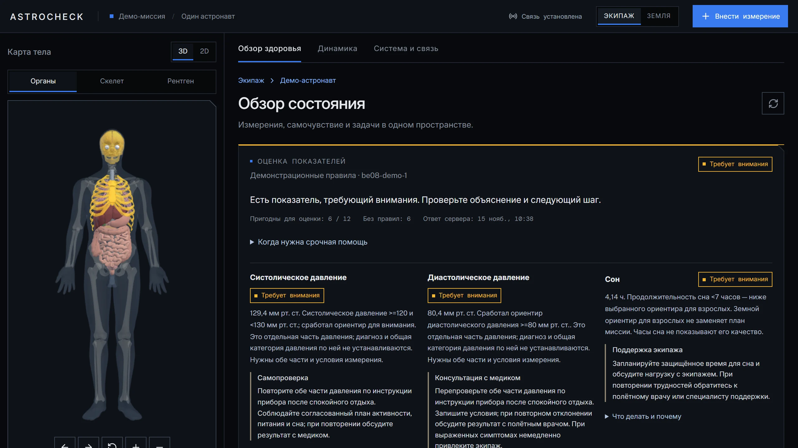
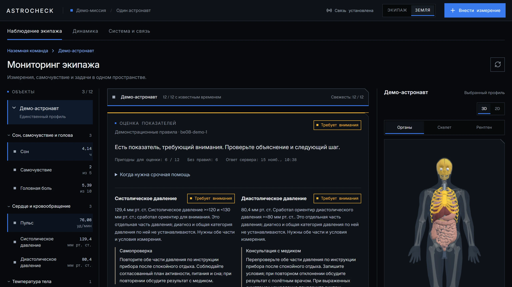
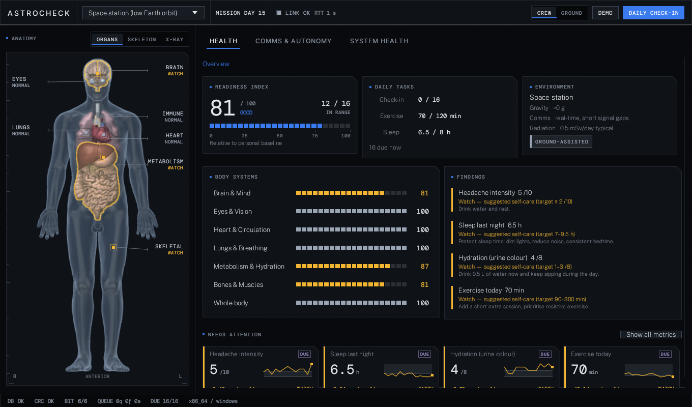

Самоконтроль здоровья экипажа — когда Земля не на связи
- BITSELF-TEST6/6 OK
- DBSQLITE · LOCALOK
- LINKEARTHNO SIGNAL
- MODEAUTONOMOUSREADY
До Марса врач не дозвонится
Ответ на вопрос «что со мной?» придёт через 40 минут — или не придёт совсем.
Радиация
Долгосрочные риски, нужна дозиметрия
Изоляция
Стресс, сон и циркадный ритм
Удалённость от Земли
Помощь и связь задерживаются
Гравитация
Кровообращение, кости и мышцы
Замкнутая среда
Воздух, шум, микроорганизмы
AstroCheck: самоконтроль
без связи с Землёй
- 01
Наблюдение
12 показателей: датчики и ручной ввод
- 02
Объяснение
Почему это важно именно в полёте
- 03
Действие
Что сделать прямо сейчас
- 04
Эскалация
Когда звать экипаж и полётного врача

Тело — это интерфейс
Клик по органу открывает его показатели, статус и ввод.
Сон, самочувствие и голова
Требует внимания- Реальная анатомия BodyParts3D: размеры и положение органов измерены, а не нарисованы
- Три слоя — органы, скелет, рентген; в браузере модель вращается в 3D
- Статус — тонкий контур: цвет появляется только при отклонении
Не диагноз — понятный следующий шаг
ориентир ≥ 7 ч
- Почему важно
- Сон меньше 7 часов — ниже ориентира для взрослых. В изоляции недосып бьёт по вниманию и работоспособности.
- Что сделать
- Запланировать защищённое время сна, обсудить нагрузку с экипажем.
- Эскалация
- При повторении — полётный врач или специалист поддержки.
- Источник
- CDC · SLEEPNASA HRP · ISOLATION
Данные без приукрашивания
Пульс
Свежее · 2 сПоток с датчика каждые две секунды.
Сон
Устарело · 26 чЗамеру больше суток — в оценку не идёт.
Температура
Время неизвестноУ прибора нет часов: время приёма не подменяет время замера.
Давление
Часы спешатМетка из будущего — расхождение показано, а не скрыто.
- Пропуски не дорисовываемразрыв линии остаётся разрывом
- Старое не выдаём за текущееу каждого показателя своё окно свежести
- Повтор без дублейдатчик может отправить пакет ещё раз
Один сервер — три интерфейса
Датчики
HTTP или шлюз USB/UART с очередью
Ручной ввод
Клик по схеме тела, форма измерения
Симулятор
Синтетические сценарии для показа
Rust + SQLiteAXUM · ОДИН HTTP API
- POST /api/measurements201
- GET /api/measurements/latest200
- GET /api/assessments200
- GET /api/measurements/series200
- Работает без интернета, в сети корабля
- Приём без дублей, история, графики
- Правила оценки — только на сервере

Веб: экипаж и Земля
3D-модель, динамика, консоль врача

Окно
Приборная панель без браузера
Терминал
По SSH, без дисплея, фигура точками Брайля
Наблюдение. Объяснение. Действие. Эскалация.
Без интернета.
- Приём с датчиков и ручной вводHTTP API и шлюз USB/UART с очередью подтверждения
- 12 показателей, история и графики24 часа, 7 и 30 дней, пропуски видны
- Объяснимые правила с источникамибез срабатываний · внимание · срочно · не оценено
- Экипаж и Земля, три интерфейсавеб с 3D, окно, терминал — один локальный сервер
- Реальные датчикипрошивка и калибровка под готовый шлюз
- Испытание на бортовом компьютереRaspberry Pi — пока не проверено
- Правила для всех 12 показателейсейчас оцениваются шесть
- Ежедневные задачи по дате миссииследующий этап сервера
Демонстрационный инструмент самонаблюдения, не медицинское изделие. Данные на показе синтетические; пороги сверены с открытыми источниками NASA, AHA, NHS и CDC.